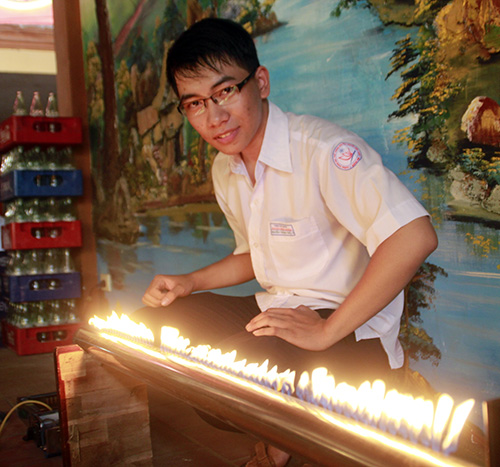

Sáng tạo trẻ chuyên Nguyễn Bỉnh Khiêm

Lần cập nhật cuối lúc Thứ bảy, 18 Tháng 10 2014 07:16 Viết bởi Administrator Thứ bảy, 18 Tháng 10 2014 07:08
Cuộc thi Sáng tạo thanh thiếu niên nhi đồng (cuộc thi) cấp quốc gia lần thứ 10 năm 2014 vừa khép lại, Quảng Nam có 5 sản phẩm/mô hình đoạt giải.
Nguyễn Thành Tín bên “Ống Ruben” - bản giao hưởng nhạc - lửa.
Tỏa sáng
Sau giải nhì cuộc thi cấp tỉnh, mô hình “Cây cầu có nhịp giữa nâng lên” của tác giả Phan Văn Đông (Trường THPT Trần Hưng Đạo, Hội An) tiếp tục chinh phục cuộc thi cấp trung ương với giải ba. Đông tâm sự: “Tác phẩm này em thai nghén suốt 3 năm. Vui hơn khi ý tưởng của mình nhận được sự đồng tình và đánh giá tốt từ thầy cô, bạn bè và ban giám khảo”. Ý tưởng sáng chế trên bắt nguồn từ một lần tình cờ xem truyền hình, Đông bắt gặp hình ảnh cây cầu ở nước Anh có nhịp giữa tự động tách ra làm đôi khi có thuyền bè chạy qua. Và ý nghĩ thay vì tách ra thì nâng lên rồi hạ xuống cứ theo đuổi cậu trò nhỏ. Ròng rã những tháng hè, Đông bỏ thời gian cho mô hình, từ thiết kế bản vẽ đến việc chăm chút xây dựng mô hình bằng tre. Có lúc Đông đã thức trắng đêm để hoàn thành những công đoạn cuối cùng kịp trình làng “đứa con” tinh thần khi thời hạn dự thi sắp hết.
Đồng giải ba là mô hình “Hệ thống tưới nước thông minh” của Nguyễn Minh Triết (Trường THPT Nguyễn Bỉnh Khiêm, Tam Kỳ), gương mặt đã gặt hái nhiều thành tích bởi tiềm năng sáng tạo không ngừng. Triết chia sẻ: “Quê mình bà con phần lớn sống nhờ nghề nông, đặc biệt là trồng trọt, vốn chịu tác động, ảnh hưởng nặng nề của biến đổi khí hậu. Việc ứng dụng hệ thống tưới nước thông minh sẽ giúp tiết kiệm nguồn nước, hướng tới nền sản xuất nông nghiệp bền vững. Để làm mô hình này, em đã quan sát rất nhiều hệ thống tưới nước tự động để tìm ra hệ thống phù hợp nhất”. “Hệ thống tưới nước thông minh” của Triết có chức năng liên tục giám sát độ ẩm của đất, khi độ ẩm của đất giảm đến mức định trước (tức thiếu nước), hệ thống sẽ tự động tưới khi đạt độ ẩm tối ưu (đủ nước)... Đặc biệt là, cậu học trò này đã tạo ra dòng sản phẩm từ những vật liệu, linh kiện rất đơn giản như: bộ cảm biến độ ẩm, bo mạch điện tử và rơ-le DC 12V, bộ nguồn 220VAC/12VDC, bơm nước hồ cá, bảng điện, hộp nhựa…
Và hình ảnh những ngọn lửa “nhảy múa” theo điệu nhạc xập xình rất đẹp mắt trong tác phẩm “Ống Ruben” của đôi bạn Nguyễn Thành Tín - Hà Thị Ánh Tuyết (Trường THPT Nguyễn Bỉnh Khiêm, Tam Kỳ) đã đem về cho Quảng Nam giải nhì toàn quốc. Nguyễn Thành Tín tâm sự: “Từ gợi ý của một thầy chủ nhiệm Câu lạc bộ Sáng tạo trẻ, hình ảnh một ống sắt với ngọn lửa nhảy xập xình đã lôi cuốn chúng em. “Ống Ruben” ra đời từ những điều em đã được học. Sự mô phỏng hiện tượng sóng dừng, sự thay hình đổi dạng liên tục của những ngọn lửa trên ống sẽ giúp chúng ta hiểu sâu sắc hơn về hình dạng của sóng âm được hình thành từ ống”.
Kỳ vọng
Ông Nguyễn Văn Diệu - Phó Chủ tịch thường trực kiêm Tổng Thư ký Liên hiệp Các hội khoa học kỹ thuật Quảng Nam đánh giá, có thể thấy, qua nhiều năm tổ chức, Cuộc thi Sáng tạo thanh thiếu niên nhi đồng cấp tỉnh và trung ương luôn thu hút sự tham gia của đông đảo thanh thiếu niên tỉnh nhà. Cuộc thi ngày càng được nâng lên về quy mô, số lượng lẫn chất lượng. Ban giám khảo đã nhận được nhiều mô hình/sản phẩm có sự dày công tìm tòi, sáng tạo của các em. Năm nay, cả cuộc thi cấp tỉnh lẫn trung ương, ban tổ chức đã tuyển chọn rất kỹ, những sản phẩm được gửi dự thi đều đã trải qua quá trình sàng lọc ở cấp địa phương, cấp tỉnh nên chất lượng được nâng lên. “Vừa qua, Liên hiệp Các hội khoa học kỹ thuật tỉnh đã thành lập được 2 đội chế tạo robot đại diện học sinh tỉnh nhà tham dự Cuộc thi Sáng tạo robot tại Đà Nẵng. Các em tham gia đội robot phần đông là những em tham gia và đoạt giải tại cuộc thi cấp tỉnh và trung ương. Về lâu dài, tỉnh sẽ thành lập câu lạc bộ sáng tạo robot tạo sân chơi để các em duy trì đam mê sáng tạo” - ông Nguyễn Văn Diệu nói.
Với những học sinh có mô hình/sản phẩm đoạt giải tại cuộc thi cấp tỉnh lẫn trung ương, ước mơ một ngày không xa tác phầm của mình sẽ được ứng dụng vào thực tiễn. Cậu học trò phố cổ Hội An Phan Văn Đông nói: “Khi đưa mô hình dự thi ở tỉnh, rồi được gửi tham dự giải ở trung ương, em nhận thấy sản phẩm của mình vẫn còn một số chi tiết chưa hoàn thiện lắm, nhất là công đoạn thiết kế bộ máy giúp cây cầu hoạt động theo lập trình. Đến nay em đã tìm ra chỗ hạn chế và khắc phục, hy vọng một ngày nào đó cây cầu của mình sẽ đi vào thực tiễn, đóng góp vào sự phát triển của quê hương”… Còn với Triết, vẫn say mê, tìm kiếm giải pháp tối ưu để hoàn thiện mô hình, bởi Triết hy vọng tương lai, em sẽ có thể biến những ý tưởng trên thành sản phẩm hoàn thiện. “Em đã tìm hiểu rất nhiều hệ thống tưới nước thông minh và nhận thấy phần lớn sản phẩm có giá thành rất cao, quy trình vận hành phức tạp, đòi hỏi người nông dân phải có trình độ nhất định mới sử dụng được. Em muốn tạo ra sản phẩm mà bất cứ nông dân nào cũng có thể sử dụng dễ dàng và đặc biệt là sản phẩm vừa túi tiền, ai cũng có thể mua được” - Triết tâm sự...
Bích Liên (baoquangnam.com.vn)
itnbk.edu.vn
- 27/02/2015 00:00 - 10 điểm nổi bật của quy chế kỳ thi THPT quốc gia
- 03/02/2015 07:03 - Băn khoăn với đổi mới giáo dục
- 31/01/2015 07:37 - Thứ trưởng Bộ GD-ĐT Nguyễn Vinh Hiển làm việ…
- 26/01/2015 16:59 - Bộ trưởng Bộ GĐ-ĐT chốt 10 điểm về kỳ thi quốc gia
- 11/11/2014 07:22 - Ra quân dọn vệ sinh hưởng ứng ngày Đô thị Việt Nam
- itnbk.edu.vn
- 25/09/2014 00:00 - Những người trẻ mê thiên văn học
- 15/09/2014 08:52 - Trao giải 5 đề tài đạt giải cuộc thi sáng tạo than…
- 30/08/2014 07:07 - Một lớp có 5 em học sinh đỗ thủ khoa đại học
- 01/04/2014 15:52 - Bộ GD&ĐT vừa công bố lịch thi tốt nghiệp THPT năm …
- 28/03/2014 09:52 - Tam Kỳ - Phú Ninh tổ chức hội thi Khi tôi 18